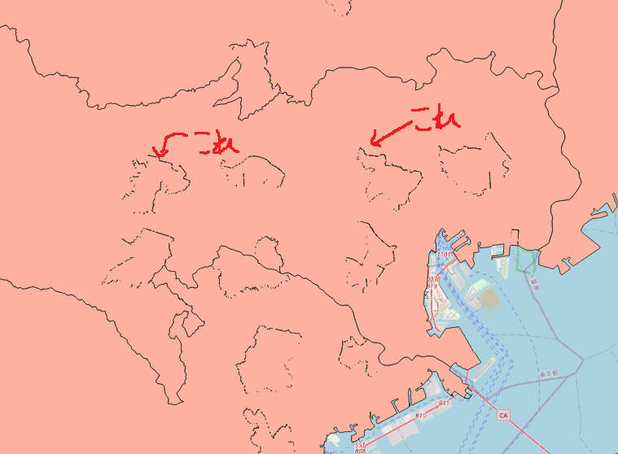
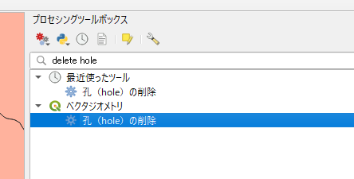
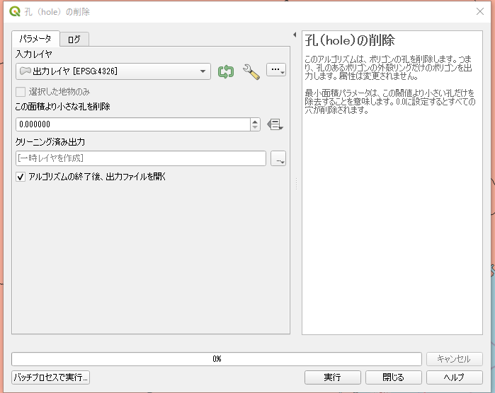
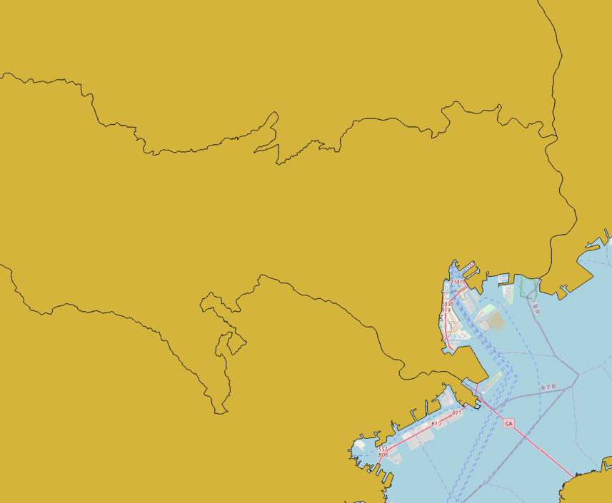

ポリゴンの小さい穴や隙間を削除する 2021-09-19 18:53 ソース タグ: GIS QGIS はじめに Dissolve などを使ってポリゴンを結合していくとこんな感じで隙間が開いちゃうことってありますよね。 この穴をふさいでみましょう。 目次 はじめに 手順 結果 手順 プロセシングツールボックスから「孔 (hole) の削除」ツールを開きます。 後は、入力レイヤを設定して「実行」するだけです。  ヒント 穴の面積を指定したい場合は「この面積より小さな孔を削除」に値を入れます。 結果 こんな感じできれいになりました。 
by PEmugi